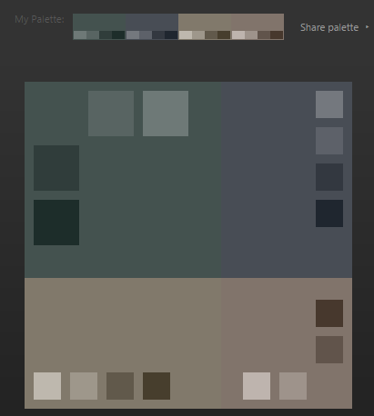
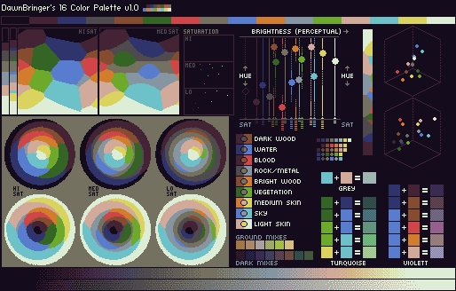
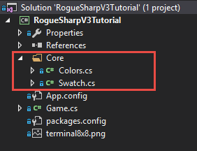
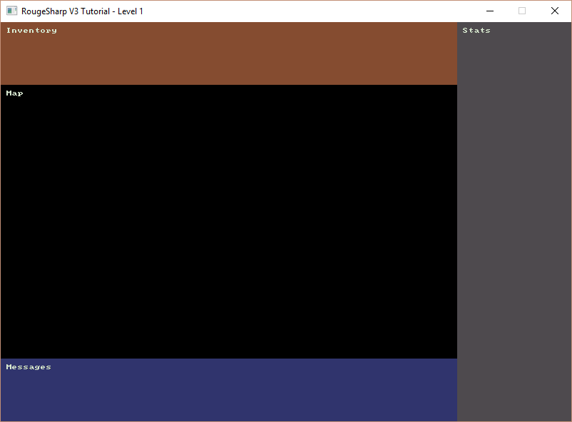

Color Palette
In this tutorial we’ll look defining a color palette or swatch that we’ll use for the elements in our game.
Paletton
There are lots of websites that will help you choose colors. One that I like is paletton. After some fiddling around I went with a Tetrad 4-color scheme that you can see here:
http://paletton.com/#uid=73d0u0k5qgb2NnT41jT74c8bJ8X

DawnBringer’s 16 Color Palette
Another palette that I ran across on the pixeljoint forums is DawnBringer’s 16 Color Palette. Read more about it here:
http://pixeljoint.com/forum/forum_posts.asp?TID=12795

Creating a Folder with Color and Swatch Classes
We are going to make two new classes called Colors.cs and Swatch.cs and they should be categorized under their own folder called Core.
You can accomplish this by right clicking on the project and choosing Add -> New Folder. Then right click on the folder and choose Add -> Class…
Do this for both Color.cs and Swatch.cs and your project should look something like the one below.

Swatch Class
RLNET lets you define colors with the RLColor constructor taking the RGB values of the color as parameters as in RLColor myColor = new RLColor( red, green, blue );
In the Swatch class we’ll define friendly names for each of the colors from the palettes that we choose so that we don’t have to recall those RGB values.
In hindsight it might have made more sense to call this class Palette. Feel free to rename yours to whatever makes sense to you.
Add the following code to Swatch.cs
using RLNET;
namespace RogueSharpV3Tutorial.Core
{
public class Swatch
{
// http://paletton.com/#uid=73d0u0k5qgb2NnT41jT74c8bJ8X
public static RLColor PrimaryLightest = new RLColor( 110, 121, 119 );
public static RLColor PrimaryLighter = new RLColor( 88, 100, 98 );
public static RLColor Primary = new RLColor( 68, 82, 79 );
public static RLColor PrimaryDarker = new RLColor( 48, 61, 59 );
public static RLColor PrimaryDarkest = new RLColor( 29, 45, 42 );
public static RLColor SecondaryLightest = new RLColor( 116, 120, 126 );
public static RLColor SecondaryLighter = new RLColor( 93, 97, 105 );
public static RLColor Secondary = new RLColor( 72, 77, 85 );
public static RLColor SecondaryDarker = new RLColor( 51, 56, 64 );
public static RLColor SecondaryDarkest = new RLColor( 31, 38, 47 );
public static RLColor AlternateLightest = new RLColor( 190, 184, 174 );
public static RLColor AlternateLighter = new RLColor( 158, 151, 138 );
public static RLColor Alternate = new RLColor( 129, 121, 107 );
public static RLColor AlternateDarker = new RLColor( 97, 89, 75 );
public static RLColor AlternateDarkest = new RLColor( 71, 62, 45 );
public static RLColor ComplimentLightest = new RLColor( 190, 180, 174 );
public static RLColor ComplimentLighter = new RLColor( 158, 147, 138 );
public static RLColor Compliment = new RLColor( 129, 116, 107 );
public static RLColor ComplimentDarker = new RLColor( 97, 84, 75 );
public static RLColor ComplimentDarkest = new RLColor( 71, 56, 45 );
// http://pixeljoint.com/forum/forum_posts.asp?TID=12795
public static RLColor DbDark = new RLColor( 20, 12, 28 );
public static RLColor DbOldBlood = new RLColor( 68, 36, 52 );
public static RLColor DbDeepWater = new RLColor( 48, 52, 109 );
public static RLColor DbOldStone = new RLColor( 78, 74, 78 );
public static RLColor DbWood = new RLColor( 133, 76, 48 );
public static RLColor DbVegetation = new RLColor( 52, 101, 36 );
public static RLColor DbBlood = new RLColor( 208, 70, 72 );
public static RLColor DbStone = new RLColor( 117, 113, 97 );
public static RLColor DbWater = new RLColor( 89, 125, 206 );
public static RLColor DbBrightWood = new RLColor( 210, 125, 44 );
public static RLColor DbMetal = new RLColor( 133, 149, 161 );
public static RLColor DbGrass = new RLColor( 109, 170, 44 );
public static RLColor DbSkin = new RLColor( 210, 170, 153 );
public static RLColor DbSky = new RLColor( 109, 194, 202 );
public static RLColor DbSun = new RLColor( 218, 212, 94 );
public static RLColor DbLight = new RLColor( 222, 238, 214 );
}
}
Colors Class
Why do we have two classes for colors? What is the difference between the Swatch class and the Colors class? I thought that the Swatch would make sense to just define the possible colors that we have to work with. Then when we define the color of something specific to our game’s domain like the Player’s symbol we can put that definition in the Colors class. It might be that both the Player’s ‘@’ symbol and the text for the inventory both use a color from the swatch such as Swatch.DbLight.
A nice benefit of keeping all of our Colors together is that if we want to change colors in the future we can come to this one place to change them and don’t have to dig all over in code to find colors spread throughout. We could also load different colors if we wanted a special colorblind mode.
Add the following code to Colors.cs
using RLNET;
namespace RogueSharpV3Tutorial.Core
{
public class Colors
{
public static RLColor FloorBackground = RLColor.Black;
public static RLColor Floor = Swatch.AlternateDarkest;
public static RLColor FloorBackgroundFov = Swatch.DbDark;
public static RLColor FloorFov = Swatch.Alternate;
public static RLColor WallBackground = Swatch.SecondaryDarkest;
public static RLColor Wall = Swatch.Secondary;
public static RLColor WallBackgroundFov = Swatch.SecondaryDarker;
public static RLColor WallFov = Swatch.SecondaryLighter;
public static RLColor TextHeading = Swatch.DbLight;
}
}
You’ll notice that the only colors that we have defined so far are for the Floor and Walls both when they are in Field-of-View and when they are not. We also defined a color for text headings.
Testing our Colors
To see if our colors are working as we expect lets go back to Game.cs and find the OnRootConsoleUpdate() method and substitute in our own colors.
// Remember to add the using for our new namespace to the top of the file
using RogueSharpV3Tutorial.Core;
private static void OnRootConsoleUpdate( object sender, UpdateEventArgs e )
{
_mapConsole.SetBackColor( 0, 0, _mapWidth, _mapHeight, Colors.FloorBackground );
_mapConsole.Print( 1, 1, "Map", Colors.TextHeading );
_messageConsole.SetBackColor( 0, 0, _messageWidth, _messageHeight, Swatch.DbDeepWater );
_messageConsole.Print( 1, 1, "Messages", Colors.TextHeading );
_statConsole.SetBackColor( 0, 0, _statWidth, _statHeight, Swatch.DbOldStone );
_statConsole.Print( 1, 1, "Stats", Colors.TextHeading );
_inventoryConsole.SetBackColor( 0, 0, _inventoryWidth, _inventoryHeight, Swatch.DbWood );
_inventoryConsole.Print( 1, 1, "Inventory", Colors.TextHeading );
}
If you run the game you should now see something like this:

This should look very familiar. That was quite a bit of work for only slightly different colors, but we’ll be using these colors for the rest of our game.
Code on GitHub
As always the code for the tutorial series so far can be found on GitHub:
Bored waiting for the next tutorial? The complete tutorial project is already finished and the source code is available on Github:
- Sample Roguelike game using RogueSharp and RLNet console
- Sample Roguelike game using RogueSharp and SadConsole
Closing Thoughts
I’m a little disappointed that throughout this post I refer to our color palettes but then when it comes to code I put the palettes in a class called swatch. I’m basically using two terms for the same thing.
When starting a new project it could be beneficial before coding to come up with a glossary for all of the objects of your game. Do you call them tiles or cells? Is it a grid or a map? Characters, Entities, Actors, Tokens, Figures… if you ever read any books on Domain Driven Design they recommend that you come up with a ubiquitous language that you use for both describing your domain (in this case our game) in both code and when speaking to others about it and then stick to it.